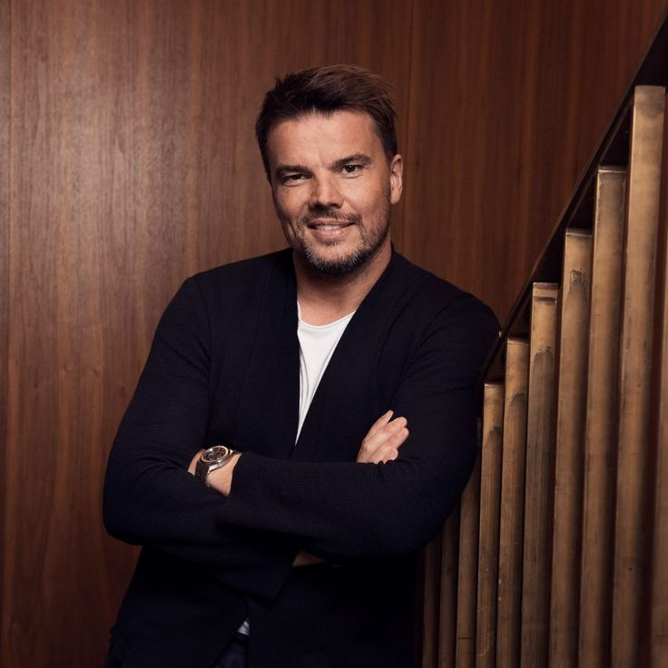
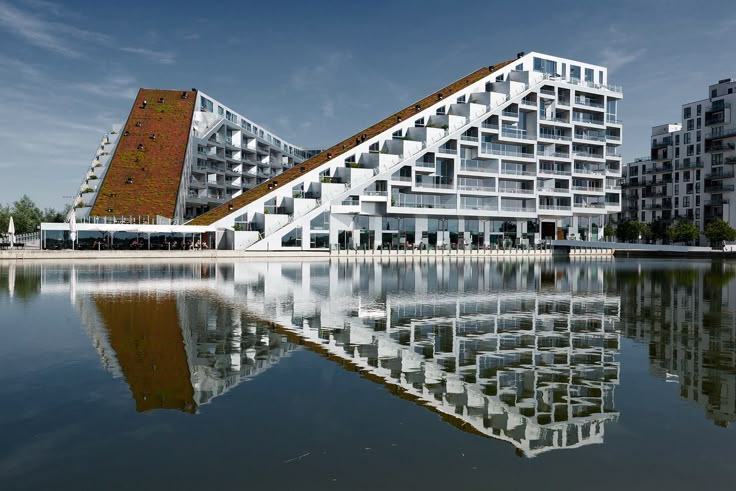
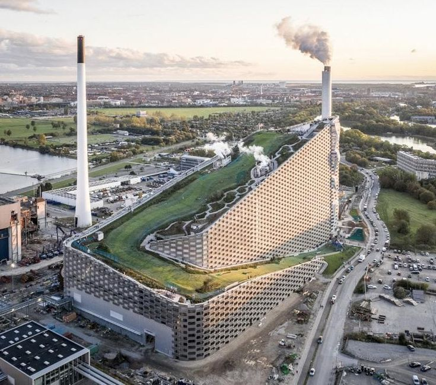
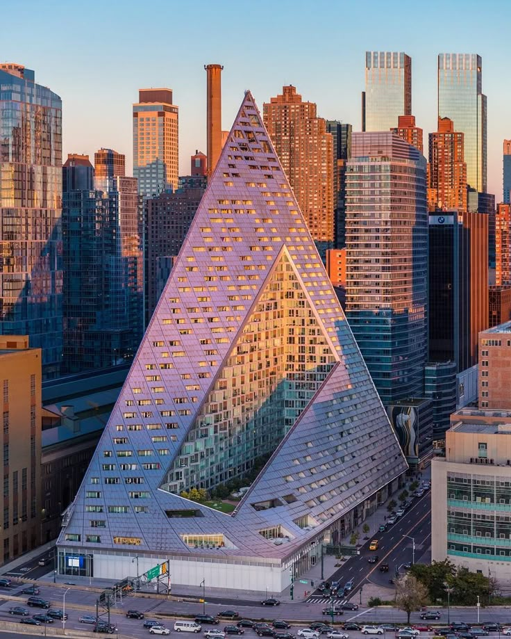

Denmark — b. 1974
Architect · Founder, BIG
Bjarke Ingels (b. 1974) is a Danish architect based in Copenhagen, educated at the Royal Danish Academy of Fine Arts and TU Delft. He began his career at OMA under Rem Koolhaas before co-founding the practice PLOT with Julien De Smedt.
In 2005, Ingels founded BIG — Bjarke Ingels Group — which grew rapidly into one of the most in-demand practices of its generation, working across Scandinavia, North America, and Asia.
His work is guided by what he calls "hedonistic sustainability" — the idea that environmentally responsible buildings can also be playful, generous, and enjoyable to live with, rather than an exercise in restraint.
2 October 1974
Danish
Pragmatic Utopianism
BIG — Bjarke Ingels Group
2005
Hedonistic Sustainability

Copenhagen, Denmark — a figure-eight housing block with a continuous bike ramp connecting every floor to the ground.

Copenhagen, Denmark — a waste-to-energy plant topped with a public ski slope, hiking trail, and climbing wall.

New York, USA — a courtyard tower that bends a European city block into a Manhattan high-rise.
Ingels argues that sustainability and enjoyment shouldn't be at odds — a well-designed building can cut emissions while also being a genuinely better place to live, work, or play, whether that means a bike ramp spiraling up an apartment block or a ski slope on a power plant.
Bjarke Ingels was born in Copenhagen, Denmark.
Gained early experience at Rem Koolhaas's Office for Metropolitan Architecture.
Co-founded an early practice with Julien De Smedt.
Established Bjarke Ingels Group in Copenhagen.
Opened the waste-to-energy plant with a rooftop ski slope.